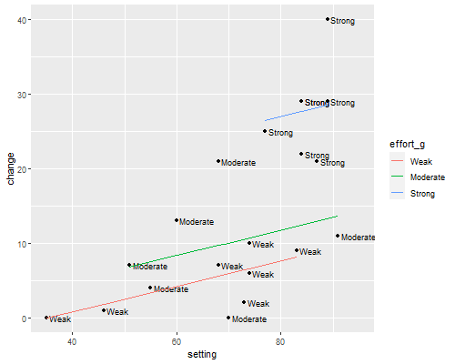

{% include r.css %}


<div id="c2s8" class="section level2 first">
<h2 class="first">2.8 Analysis of Covariance Models</h2>
<p>We now consider models that include as predictors a continuous
variable and a discrete factor, sometimes called <em>ancova</em> models.
As usual, we read the data and group effort into categories, so we can
run this unit by itself.</p>
<pre class="r"><code>&gt; library(dplyr)
&gt; fpe &lt;- read.table(&quot;https://grodri.github.io/datasets/effort.dat&quot;) 
&gt; fpe &lt;- mutate(fpe, effort_g = cut(effort, breaks=c(min(effort), 5, 15, max(effort)),
+   right=FALSE, include.lowest=TRUE, labels=c(&quot;Weak&quot;,&quot;Moderate&quot;,&quot;Strong&quot;)))</code></pre>
<p>Here’s the model treating social setting as a covariate with a linear
effect and program effort as a factor variable with three categories</p>
<pre class="r"><code>&gt; m2cg &lt;- lm(change ~ setting + effort_g, data=fpe)
&gt; summary(m2cg)</code></pre>
<pre><code>
Call:
lm(formula = change ~ setting + effort_g, data = fpe)

Residuals:
     Min       1Q   Median       3Q      Max 
-10.0386  -2.8198   0.1036   1.3269  11.4416 

Coefficients:
                 Estimate Std. Error t value Pr(&gt;|t|)    
(Intercept)       -5.9540     7.1660  -0.831    0.418    
setting            0.1693     0.1056   1.604    0.128    
effort_gModerate   4.1439     3.1912   1.299    0.213    
effort_gStrong    19.4476     3.7293   5.215 8.51e-05 ***
---
Signif. codes:  0 &#39;***&#39; 0.001 &#39;**&#39; 0.01 &#39;*&#39; 0.05 &#39;.&#39; 0.1 &#39; &#39; 1

Residual standard error: 5.732 on 16 degrees of freedom
Multiple R-squared:  0.8016,    Adjusted R-squared:  0.7644 
F-statistic: 21.55 on 3 and 16 DF,  p-value: 7.262e-06</code></pre>
<p>Compare the coefficients with Table 2.23 in the notes. Countries with
strong programs show steeper fertility declines, on average 19
percentage points more, than countries with weak programs and the same
social setting.</p>
<p>To test the significance of the net effect of effort we use the
<code>anova()</code> function.</p>
<pre class="r"><code>&gt; anova(m2cg)</code></pre>
<pre><code>Analysis of Variance Table

Response: change
          Df  Sum Sq Mean Sq F value    Pr(&gt;F)    
setting    1 1201.08 1201.08  36.556 1.698e-05 ***
effort_g   2  923.43  461.71  14.053 0.0002999 ***
Residuals 16  525.69   32.86                      
---
Signif. codes:  0 &#39;***&#39; 0.001 &#39;**&#39; 0.01 &#39;*&#39; 0.05 &#39;.&#39; 0.1 &#39; &#39; 1</code></pre>
<p>We obtain an F-ratio of 14.1 on 2 and 16 d.f., a significant result.
[The complete anova in Table 2.24 in the notes can be obtained from the
model with a linear effect of setting in <a href="c2s4">Section 2.4</a>
and the present model.]{stata}</p>
<p>This analysis has adjusted for linear effects of setting, whereas the
analysis in <a href="c2s7">Section 2.7</a> adjusted for differences by
setting grouped in three categories. As it happens, both analyses lead
to similar estimates of the difference between strong and weak programs
at the same level of setting.</p>
<div id="plotting-observed-and-fitted" class="section level3">
<h3>Plotting Observed and Fitted</h3>
<p>Let us do Figure 2.5, a plot of change versus setting identifying the
level of program effort corresponding to each point. I will also
superimpose the three parallel lines corresponding to the fitted
model.</p>
<p>We call <code>fitted()</code> to calculate fitted values, use the
levels of <code>effort_g</code> to label the points, left-justified with
a bit of space, and then plot the fitted regression lines for each level
of effort.</p>
<pre class="r"><code>&gt; library(ggplot2)
&gt; fpe &lt;- mutate(fpe, fitted=fitted(m2cg))
&gt; png(file=&quot;fig25r.png&quot;, width=500, height=400) 
&gt; ggplot(fpe, aes(setting, change, label=effort_g)) + geom_point() + 
+   geom_text(hjust=&quot;left&quot;, nudge_x=0.6, size=3) +
+   geom_line(data=group_by(fpe, effort_g), aes(setting, fitted, color=effort_g)) +
+   coord_cartesian(xlim=c(35, 95))
&gt; dev.off()</code></pre>
<pre><code>png 
  2 </code></pre>
<p></p>
</div>
<div id="adjusted-and-unadjusted-means" class="section level3">
<h3>Adjusted and Unadjusted Means</h3>
<p>Let us turn to the comparison of adjusted and unadjusted declines in
Table 2.26, a useful way to present regression results to a
non-technical audience.</p>
<pre class="r"><code>&gt; b &lt;- coef(m2cg)   
&gt; fpe &lt;- mutate(fpe, adj_change = 
+   b[1] + b[2]*72.1 + b[3]*(effort_g==&quot;Moderate&quot;) + b[4]*(effort_g==&quot;Strong&quot;) )</code></pre>
<p>Next we tabulate our data by level of effort and summarize observed
and adjusted change.</p>
<pre class="r"><code>&gt; group_by(fpe, effort_g) |&gt; 
+   summarize(observed=mean(change), adjusted=mean(adj_change))</code></pre>
<pre><code># A tibble: 3 × 3
  effort_g observed adjusted
  &lt;fct&gt;       &lt;dbl&gt;    &lt;dbl&gt;
1 Weak         5        6.25
2 Moderate     9.33    10.4 
3 Strong      27.9     25.7 </code></pre>
<p>Countries with strong program average a 28% decline in fertility, but
they also tend to have higher settings; we estimate a slightly smaller
decline of about 26% at average social setting. The estimate is based on
the model, which adjusts linearly for setting and assumes that the slope
is the same at all levels of effort. The next step will be to examine
this assumption.</p>
</div>
<div id="the-assumption-of-parallelism" class="section level3">
<h3>The Assumption of Parallelism</h3>
<p>We will now allow the linear relationship between change and setting
to vary with level of effort, by introducing an interaction between
setting and the indicators of effort. Before we do that we center the
index of social setting by subtracting the mean, a practice I highly
recommend to simplify the interpretation of “main” effects when the
model has interactions:</p>
<pre class="r"><code>&gt; fpe &lt;- mutate(fpe, setting_c = setting - mean(setting))</code></pre>
<p>We can now run the regression using</p>
<pre class="r"><code>&gt; m3cg &lt;- lm(change ~ setting_c * effort_g, data = fpe)
&gt; summary(m3cg)</code></pre>
<pre><code>
Call:
lm(formula = change ~ setting_c * effort_g, data = fpe)

Residuals:
    Min      1Q  Median      3Q     Max 
-9.7364 -2.2036 -0.0549  1.8122 11.4571 

Coefficients:
                           Estimate Std. Error t value Pr(&gt;|t|)  
(Intercept)                 6.35583    2.47730   2.566   0.0224 *
setting_c                   0.18357    0.13970   1.314   0.2099  
effort_gModerate            3.58373    3.66235   0.979   0.3444  
effort_gStrong             13.33320    8.20916   1.624   0.1266  
setting_c:effort_gModerate -0.08684    0.23258  -0.373   0.7145  
setting_c:effort_gStrong    0.45670    0.60392   0.756   0.4620  
---
Signif. codes:  0 &#39;***&#39; 0.001 &#39;**&#39; 0.01 &#39;*&#39; 0.05 &#39;.&#39; 0.1 &#39; &#39; 1

Residual standard error: 5.959 on 14 degrees of freedom
Multiple R-squared:  0.8124,    Adjusted R-squared:  0.7454 
F-statistic: 12.13 on 5 and 14 DF,  p-value: 0.0001112</code></pre>
<pre class="r"><code>&gt; anova(m3cg)</code></pre>
<pre><code>Analysis of Variance Table

Response: change
                   Df  Sum Sq Mean Sq F value    Pr(&gt;F)    
setting_c           1 1201.08 1201.08 33.8263 4.476e-05 ***
effort_g            2  923.43  461.71 13.0034 0.0006426 ***
setting_c:effort_g  2   28.59   14.30  0.4026 0.6760530    
Residuals          14  497.10   35.51                      
---
Signif. codes:  0 &#39;***&#39; 0.001 &#39;**&#39; 0.01 &#39;*&#39; 0.05 &#39;.&#39; 0.1 &#39; &#39; 1</code></pre>
<p>Compare the parameter estimates with Table 2.27 in the notes. You
also have all the information required to produce the hierarchical anova
in Table 2.28.</p>
<p>Because we centered setting, the coefficients for moderate and strong
programs summarize differences by effort at mean setting, rather than at
setting zero (which is well outside the range of the data). Thus,
fertility decline averages 13 percentage points more under strong than
under weak programs in countries with average social setting.</p>
<p>The interaction terms can be used to compute how these differences
vary as we move away from the mean. For example in countries which are
ten points above the mean social setting, the strong versus weak
difference is almost five percentage points more than at the mean. These
differences, however, are not significant, as we can’t reject the
hypothesis that the three slopes are equal.</p>
<p><em>Exercise</em>. Plot the data and the regression lines implied by
the model with an interaction between linear setting and level of
effort. Note how the difference between strong and weak programs
increases with social setting. The interaction is not significant,
however, so we have no evidence that the lines are not in fact
parallel.</p>
<p><small>Updated fall 2022</small></p>
</div>
</div>
